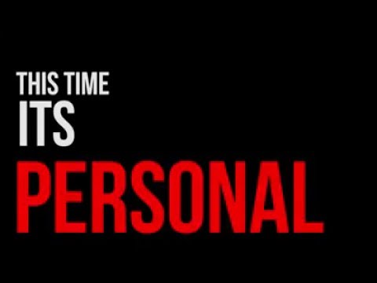

Stylish and Responsive
Man this feels so meta. Wesley's Website is not only an ongoing project that tests my ability to design, implement, and manage a quality website, but also a way for me to practice my writing and teaching skills. My website is written in HTML / CSS, and served using Apache Web Server. If you're not busy, stay a while and check out the topics I have in store!
Topics
About
This all started when my brother left his old computer in my possession. I could have left it out to gather dust, but instead I took the opportunity to make a server out of it. I performed a memory wipe to prepare my new toy for an Ubuntu installation. I think it was then that I realized that having a personal server opens up so many possibilities.

A while passed, and it was only after college that I thought about making a website. I hadn't taken any courses about web development from school, so I figured that this was a pretty good opportunity for me to learn something new. The people I met don't think much of web development, but I think they make quite an impact. In the digital age, every company needs a website. And I like writing stuff anyway, so I spent a couple of days learning HTMLHyperText Markup Language and CSSCascading StyleSheets and made this website.
I think it's pretty good
What do you think?
https://www.viget.com/articles/color-contrast